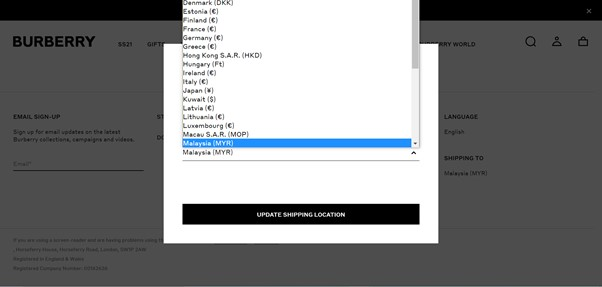
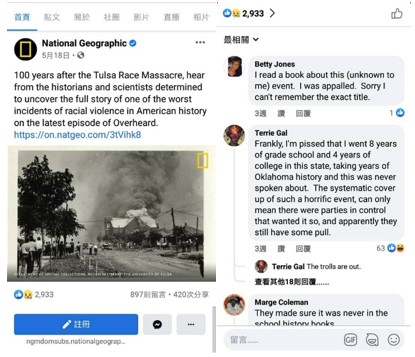
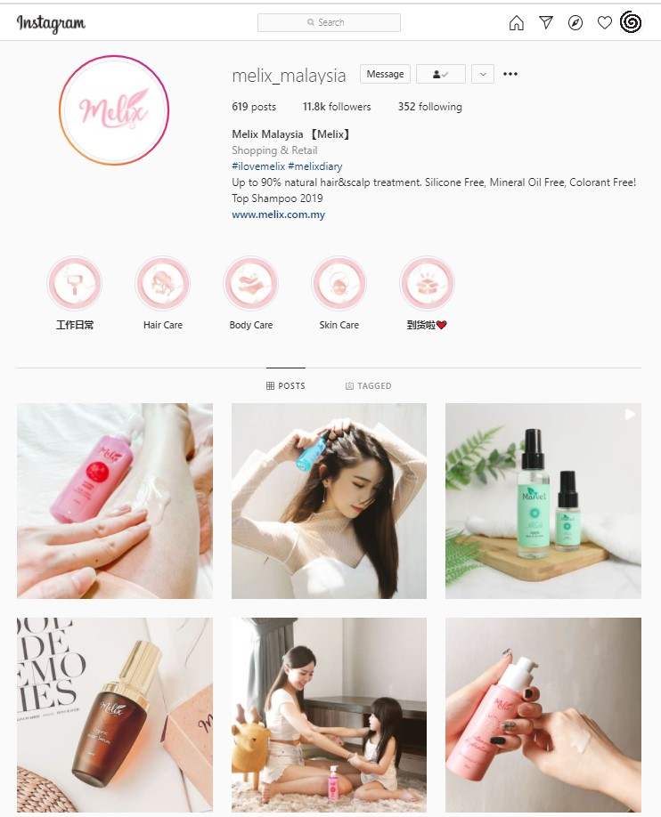
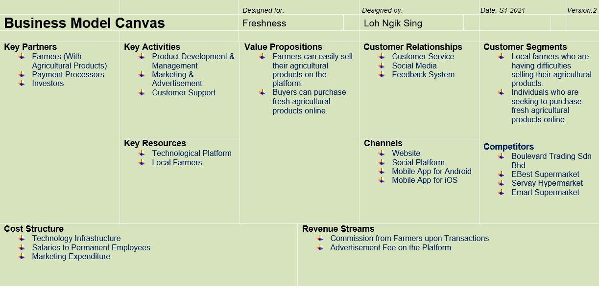
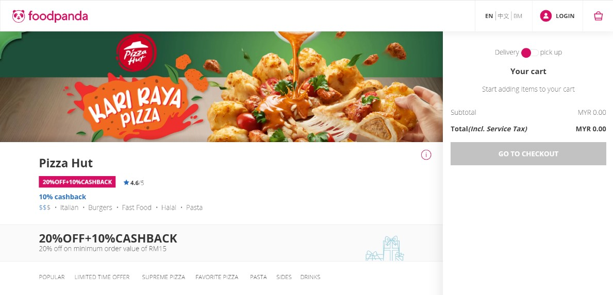
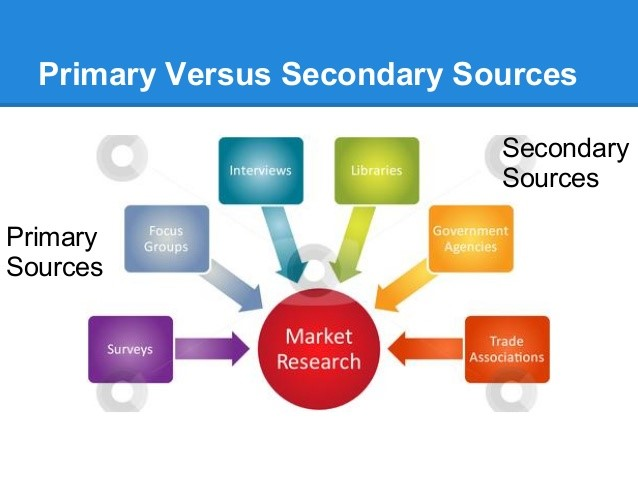

Personal Information
Name: Leona Loh
Biography: A detail-oriented and passionate person who derives pleasure from contributing to society. Intends to utilise the knowledge and skills acquired through studies to help in achieving a better and more sustainable future for all. Has a clear and logical mind for problem-solving and always strives for quality in accomplishing tasks. Often approaches tasks seriously and pursues perfection as much as possible. Possesses patience and friendliness, facilitating communication with others.
Educational Background
Institutions Attended: Swinburne University of Technology Sarawak
Degrees Earned: Bachelor of Business (International Business)
Experiential Learning Evidence
Reflective Journal (For the Global and Digital Marketplaces)
Introduction
Global and digital marketplaces are developed and become essential for every business nowadays. With the advancement in information technology, the global marketplaces are changed compared to the old times. Many companies can run their business globally to reach out to more potential consumers through digitalisation. This journal studies eight topics of the Global and Digital Marketplaces units to understand the principles and theories in these topics and demonstrate them in real-life situations. In this paper, the topics that will be covered are The Recent Development in the Global Marketplace, Global Marketspace and Virtual Networking: Web 2.0 Revolution, Social Media in the Global Marketplace: Power of Web 2.0, Global Consumer Culture, Business Perspective 2.0 – Business in the Global Marketplace, Integration and Fragmentation of the Global Marketplace, Researching the Global Marketplace, and Developing IT Enabled Strategies to Exploit Global Marketplace Opportunities. These topics are studied in terms of key concepts learnt, achievements in learning, evidence of learning, assessment of learning, and relevance of learning. By looking into these, people can utilise the principles and theories in each topic in their lives.
Topic 1 The Recent Development in the Global Marketplace
1. Key Concepts Learnt:
Globalisation is certainly not a new phenomenon; it has characterised the world economic activity since the Age of Exploration in the 16th century and featured many ancient systems such as the Roman Empire. In general, opening international borders to the ever-faster flows of goods, services, finance, people and ideas; and changes in institutions and policies at the national and international levels that promote or facilitate such flows is the comprehension of globalisation nowadays.
2. Achievements in Learning:
A global marketplace is an institutional structure that allows the exchange of goods, services and labour between individuals and organisations regardless of the specific geographic locations. For example, a business located in Malaysia can purchase raw materials from the United States, Vietnam, and South Korea. The company can then process the materials and turn them into products in an Indonesia’s factory. Following that, the manufactured products can distribute from Indonesia to the retail stores in Australia.
3. Evidence of Learning:
In the late 19th century, the entire marketplace was under one roof of department stores, whereas it switched to malls in the 20th century with the addition of catalogues, telephone lines and internet to interconnect with the customers. As time goes on, the online platform has become the typical global marketplace in the 21st century. By referring to the figure above, Burberry has now created a global marketplace on the internet for its customers worldwide to purchase its products convenient.
4. Assessment of Learning:
I have shared my opinion with my classmate, Cecelia, whereby every international business should cope with the changes in the global marketplace, especially in the COVID-19 pandemic period. Businesses are encouraged to utilise the current online global marketplace to sustain themselves in the market. Cecelia believes the reason behind this is the increasing number of internet users worldwide. The active internet users as of January 2021 have reached up to 59.5 per cent out of the world’s total population.
5. Relevance of Learning:
Suppose I would like to run my enterprise in the future. I notice that it is incredibly vital to apply the internet platform to expand the business into a global marketplace. Through the convenient platform, the company can distribute the products or services to consumers anywhere around the world more efficiently.
Topic 2 Global Marketspace and Virtual Networking: Web 2.0 Revolution
1. Key Concepts Learnt:
The world today is being recognised as a “global village”. The word “global village” is a phrase that brings the definition of all the world countries are considered closely connected by modern communication and trade. The telecommunications such as the internet or media has linked the world together. People now can easily access any information, get in touch with anyone, and carry out business transactions compared to the 1800s and 1900s.
2. Achievements in Learning:
Rather than the global village, global marketspace is the other most prominent metaphors associated with internet enabled globalisation. Marketspace means the information and communication technology built on an electronic or online exchange environment. It is a marketplace where people meet in an online virtual environment to interact and perform sales transactions. Remarkably, competition and consumer choice always drive economic activity in the global marketspace.
3. Evidence of Learning:
Interrelated with the global marketspace, Web 2.0 was first known in 2004 by the public. The figure above shows that people are leaving comments under the post of National Geographic, and a difference between Web 2.0 and Web 1.0 can be seen from it. Before that, Web 1.0 only enabled reading mode, and no writing was allowed. Looking into Web 2.0 now, people can comment on other posts on the platform, such as Facebook, as shown in the figure above.
4. Assessment of Learning:
I have told my peer, Cherrie, that I would like to apply AI assistant technology like chatbots in my business in order to get back to my customers on the spot. Regarding the idea, Cherrie wondered will the customer service purely rely on AI tools. To answer the question, AI is just an assistant tool to respond to certain customer’s concerns quickly out of the working hours. Indeed, customer service is still required human labour to resolve some specific problems that the customers have faced.
5. Relevance of Learning:
My self-identity is indicated in my daily life. As a person who concerns environmental issues and cares about the world's sustainable growth, I emphasise environmentally actions that each individual can take. For instance, I always bring my own recycle bag while I am purchasing in a store. Also, I avoid the usage of plastic straws by preparing steel straw in my bag.
Topic 3 Social Media in the Global Marketplace: Power of Web 2.0
1. Key Concepts Learnt:
Today, billions of people around the world use social media in their daily lives, and the generalisation of social media is still constantly growing as social media users are expected to increase up to 4.41 billion in 2025. In the marketspace, social media such as Facebook, Instagram, Twitter, Youtube, Wechat, et cetera are powerful tool to carry words, text, pictures, and videos contents.
2. Achievement in Learning:
Unlike in the past, consumers now are turning to prosumers; it is the coming of age of prosumers. The term prosumer comes from the combination of terms producer and consumer. A prosumer is an individual who produces and consumes the products at the same time. To be specific, it can also be referred to as a professional consumer who buys and uses the products and spreads the word about them through social media platform.
3. Evidence of Learning:
Melix is a health and beauty brand in Malaysia. By looking at the figure above, the brand has created the hashtag #ilovemelix and #melixdiary on its Instagram account. The users can freely upload a post to their Instagram account and include those hashtags in the post to share their experiences about the products after purchasing and using the products. Under this circumstance, any consumers who share their user experiences on Instagram refer to creative consumers of Melix.
4. Assessment of Learning:
My idea of advertising my products or services on social media would be live streaming, as I find it is increasingly popular each year. Based on the statistics, 7 out of 10 people who report that they watch live streams say they tune in to a live stream daily. My friend, Sabrina, agrees with my idea because she feels like live streaming is becoming part of people’s lives now. Even she is also a lover of watching live streaming in her everyday life.
5. Relevance of Learning:
If I would like to start my business, I realise that social media is essential to apply as it can drive the contents between business and consumers. It allows the company to understand the user’s experience and make amendments based on it. Without social media platform, business is tricky to interact and communicate with customers.
Topic 4 Global Consumer Culture
1. Key Concepts Learnt:
Glocalisation, an amalgamation of globalisation and localisation, is introduced to describe a global product or service adjusted to suit consumers' preferences in a domestic market. A good example would be McDonald's modified its menu according to the religious practices in India by inhibiting beef or pork. Menu items such as the Maharaja Mac, a Big Mac made with chicken patties as a substitute for beef, are released in India’s McDonalds.
2. Achievements in Learning:
Acculturation refers to the cultural modification where an individual, group, or people adapt or borrow traits from another culture. The process of acculturation can be looked into assimilation view. In the context of assimilation, individuals slowly lose part or the entire heritage of their original culture while acquiring the cultural traits of a different culture. For instance, a Chinese who moves to the United States might gradually change his or her actual eating habits into American style after living there for a few years.
3. Evidence of Learning:
The figure above shows that people were watching fireworks show in Shanghai Disneyland. Apparently, the gorgeous fireworks will bring magical experiences to the visitors. In addition to that, visiting Disneyland allows consumers to experience the Disney brand as the ‘happiest place on earth’.
4. Assessment of Learning:
President of China, Xi Jinping, announced the Healthy China Plan in October 2016 to boost the health-conscious in China. For this reason, my business initiative to the Chinese market would be to open up workout stations and healthy food restaurants. My friend, Ting, has provided feedback to me whereby the ideas are not bad since China has a large population and high purchasing power. Still, I should be aware of the possible fierce competition meanwhile.
5. Relevance of Learning:
Global culture, the homogenous values, beliefs, lifestyles and symbols shared in a unified manner by individuals across countries, can be seen in my life as well. Cases in point are I eat McDonald’s; I drink Coca Cola; I wear Levis; et cetera. Although I am a Malaysian, it does not matter for me to use those global cultural brand. Similar to the other countries and regions, these brands are available to use among individuals.
Topic 5 Business Perspective 2.0 – Business in the Global Marketplace
1. Key Concepts Learnt:
Social commerce is a combination of social media and e-commerce. By using social media as a mediator, social commerce supports social interaction and user contributions to assist online and offline products and services buying-selling activities. Notably, social commerce and e-commerce are different. For example, the like and comment button is using in social commerce. However, e-commerce is not allowed people to like or comment.
2. Achievements in Learning:
Crowdsourcing is a method of solving problems and producing things through the connection of online and people. With that being said, crowdsourcing is actually the business model of my startup business. For example, my business plays the role of a technological platform such as a mobile app to link the local farmers (owner) and the buyers (seeker) together. Local farmers are the owner who has agricultural products to sell, and buyers are the seeker who is looking for fresh vegetables and fruits.
3. Evidence of Learning:
The business model canvas of my business, Freshness, is shown above. In fact, this model consists of nine building blocks, and I have added the block of competitors as I find it is a loophole in the original model whereby the competitors are not studied. From my perspective, analysing my competitors such as Boulevard Trading Sdn Bhd, Ebest Supermarket, Servay Hypermarket, and Emart Supermarket is vital. Therefore, I can figure out strategies to compete with them and do better than them.
4. Assessment of Learning:
In the context of branding, I have an idea to create a logo for my business with a vegetables and fruits icon, together with green colour as the theme. My peer, Cecelia, has given support to my idea because she thinks having a logo can differentiate my business from the other competitors. Aside from that, she feels the icon and colour of my logo are great as it seems neutral in most countries worldwide.
5. Relevance of Learning:
Starbucks failed in Australia because it used a similar model that has applied in the United States in Australia. Hence, I will not do the same thing for my business. Instead, I will customise my business model accordingly to cater for the customers in the host country. Thus, my business can avoid enduring the failures that Starbucks faced in Australia.
Topic 6 Integration and Fragmentation of the Global Marketplace
1. Key Concepts Learnt:
Because of globalisation and free trade, the nationality of multinational enterprises (MNEs) is unclear nowadays. To reduce the cost of production, MNEs involve in foreign direct investments (FDIs). For example, Nike products are not necessarily manufactured in their origin country, America, but they can be made in countries like Vietnam, Indonesia, et cetera to save the logistics cost. In this case, the company's nationality becomes unclear as the manufacturing plants are everywhere, leading to unethical doings such as child labour happened in Nike.
2. Achievements in Learning:
Fragmentation is one of the practical approaches in the global marketplace. All markets are diverse and composed of various segments, needs, wants, responses and behaviours in this context. With the fragmented approach, the company can distinguish its competitive advantages from its competitors. For instance, in the clothing industry, Zara provides a higher number of available products – wider choices for the customers; Uniqlo is famous for its simplistic and practical design; H&M is known for its affordable prices.
3. Evidence of Learning:
Pizza Hut implements an integrated approach that utilises collaboration with vendors or business partners to cater for the global marketplace. By referring to the figure above, Pizza Hut collaborates with foodpanda (the online food delivery platform) to send their foods to the customers. Through the collaboration, Pizza Hut does not have to worry about hiring the riders to deliver the pizzas as foodpanda will assist it in delivering the foods.
4. Assessment of Learning:
Based on the integrated approach, I come out with the idea of collaborating with Online Payment Gateway Service Providers such as ipay88, Razerpay, et cetera to carry on the payment of my business. My friend, Lai, highly recommended my idea of collaborating with those parties as it could provide a convenient and secure payment environment while the transactions are carried out on my application platform.
5. Relevance of Learning:
To target different kinds of consumers, I intend to break the customers of my future business into distinct segments and release different types of services according to their preferences. Thus, my business can meet various demands of customers in the markets rather than satisfy the needs of a small group of specific customers only.
Topic 7 Researching the Global Marketplace
1. Key Concepts Learnt:
Market research connects consumers and the public with marketers through information–information used to identify and define marketing opportunities and problems; generate, refine and evaluate marketing activities; monitor marketing performance; and improve marketing understanding as a process. The research specifies the information needed to solve these issues, designs methods for collecting information, manages and implements the data collection process, analyses the results, and communicates the findings and their implications.
2. Achievements in Learning:
Etic is a research approach that illustrates phenomena in constructs that apply across cultures. For example, country individualism-collectivism degree might be tied to the prevalence with which superior reason about justice regarding the equity rule such as bonuses should always correspond to contributions. In the etic model, behaviours are studied from outsiders’ perspectives, “universal” criteria for evaluating behaviours and the structure is discovered by the researchers.
3. Evidence of Learning:
There are two types of data sources: primary and secondary data, as shown in the figure above. Primary data is collected for a specific purpose, and it falls under qualitative and quantitative. The survey, focus groups and interviews are all methods that generally can be used to collect primary sources. Unlike primary data, secondary sources only consist of available data collected previously in term of quantitative. It can be all documented data from libraries, government agencies and trade associations.
4. Assessment of Learning:
To tackle the reputation risk of my business, I shared my idea of applying the strategy of presence to my classmate, Cherrie. More specifically, I would like to utilise the world’s most used social media platform, Facebook, to reach the intended audiences. Instead of the strategy of presence, Cherrie asked would I consider applying the strategy of omnipresence. I answered it might be my consideration in the future, but now I tend to focus on the presence strategy first, especially while the business is in the startup phase.
5. Relevance of Learning:
In future, I would like to use sentiment analysis in my business to study the nasty rants, new product perception, brand perception and reputation of my company. I will work accordingly on all the negative comments and take the positive comments as my motivations. Also, I will analyse the emojis in order to get more opinions behind them.
Topic 8 Developing IT Enabled Strategies to Exploit Global Marketplace Opportunities
1. Key Concepts Learnt:
Organisations that discover and exploit opportunities in more than one country from inception are defined as born globals. Not all companies that do business internationally are undoubtedly referred to as born global firms. Differ from international companies who operate from their home country and slowly go into the worldwide market after years of doing business locally; born global firms tend to expand abroad immediately from the beginning.
2. Achievements in Learning:
One of the advantages of being global is that the firms can quickly capitalise on new ideas anywhere around the world. The companies are not limited to focus on the domestic market. They can tap into the ideas in each part of the world and transfer these to their markets. For example, a Malaysian company can bring some other international ideas from Europe to its business.
3. Evidence of Learning:
Coca Cola uses extension as its global product development and communication strategies. It markets a standardised product which is coke, using a uniform communication strategy because customers’ tastes vary from individual to individual. By taking coke as standardisation, Coca Cola customises them accordingly to meet customers’ preferences. For instance, Coca Cola extends a variety of products such as Coca Cola Light and Coca Cola Zero from the original coke.
4. Assessment of Learning:
As Nestle trained coffee farmers of growing coffee, I have an idea to provide training to the local farmers on my platform of producing agricultural products such as vegetables and fruits efficiently as well. Thus, they can have sufficient and high-quality agricultural products to sell on the application platform. The idea sounds good to my classmate, Jeffrey, as he thinks the training can help ensure my application platform offers standard and quality agricultural products to buyers.
5. Relevance of Learning:
I would like to apply sprinkler strategy to my business like Grab. My business is similar to Grab, whereby Grab is an application to link drivers and passengers together at first, and my business is also going to develop an application to connect the local farmers with the buyers to allow them to carry out transactions. By implementing the sprinkler strategy, I can take the preemptive opportunity within one to two years among competitors internationally.
Conclusion
To conclude, the global marketplace has been developed over the past centuries. It established from under the roof of department stores in the 19th century to being online in the current era. The changes have enabled the international business to carry out transactions more accessible in the global marketplace. Despite the geographic limitations, the development in the global marketplace has made the company able to do their business even in the COVID-19 pandemic period.
Next, global village and global marketspace are the most prominent metaphors associated with internet enabled globalisation. The advancements in information technology have brought countries to countries and individuals to individuals closer. Businesses can get in touch with customers in an online virtual environment. Much more interaction is created from Web 2.0 in comparison with Web 1.0.
Furthermore, social media platforms grow rapidly and permeate many people's daily lives, particularly the young generation nowadays. The common social media include Facebook, Instagram, YouTube, Twitter, et cetera; they are fun tools for the people. Due to the popularity of social media, traditional consumers tend to switch to prosumers. These individuals not only consume and use the products, but they spread the words about it through their social media platform at the same time.
Besides, consumer culture is vast in the global marketplace. Instead of globalisation, glocalisation is introduced, whereby global brands adjust their products or services to accommodate a domestic market. On the other hand, individuals might gradually lose their culture of origin and acquire the new culture while being in a different culture.
Social commerce is promoted because of the prevalence of social media, as mentioned. The customer’s preference for interaction with sellers is also another motivation for this kind of commerce. In the meanwhile, many startups now have used crowdsourcing as their business model. It is a method based on sharing economy model to solve a problem. Additionally, the company should not overlook the influence of branding, especially when it comes to a global operation.
The nationality of multinational enterprises has become unclear in the process of time. This situation has led to customer’s confusions and unethical doings such as child labour. Apart from that, integration and fragmentation are practical approaches in the global marketplace. These approaches possess their pros and cons, and therefore the company can apply the appropriate method in different phase depends on the situation.
Other than that, market research is significant for every business to understand their customers further and develop their products or services accordingly. Thus, they are able to compete with the competitors and sustain themselves in the global marketplace. The etic model is one of the methods that can be used in market research. With that being said, the data in market research can be divided into primary and secondary sources.
Lastly, born global firms come into vogue over the past decades. Those born global firms include FedEx, Grab, Airbnb, et cetera. Notably, the born global firms are varied from the international companies as they usually globalise rapidly within just a few years. Being global allows the firm to capitalise on new ideas anywhere around the world.
Simple Game Designed Using Scratch
Dragon Baby's Ang Pow Hunt
Here's a game I created on Scratch. Feel free to play and explore!